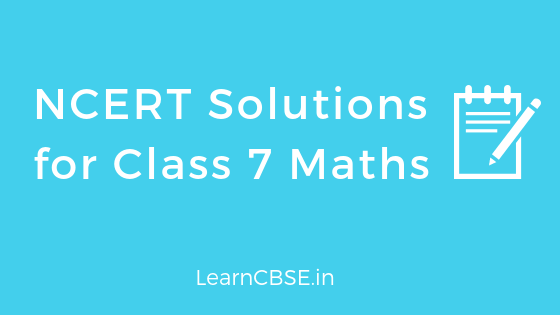

If you are looking for NCERT Solutions for Class 7 Maths, you have come to the right place. Experienced LearnCBSE.in Teachers has created detailed CBSE 7th class maths textbook solutions. We provide that are precise to the point and absolutely error free. NCERT class 7 maths solutions includes all the questions provided as per new revised syllabus in NCERT Class 7 Maths textbook. NCERT maths book class 7 solutions pdf can be downloaded in One click without LOGIN. You can also practice Extra Questions for Class 7 Maths on LearnCBSE.in
NCERT Solutions for Class 7 Maths
Chapter wise detailed NCERT Solutions for Class 7 Maths are given below.
- Chapter 1 Integers
- Chapter 2 Fractions and Decimals
- Chapter 3 Data Handling
- Chapter 4 Simple Equations
- Chapter 5 Lines and Angles
- Chapter 6 The Triangles and its Properties
- Chapter 7 Congruence of Triangles
- Chapter 8 Comparing Quantities
- Chapter 9 Rational Numbers
- Chapter 10 Practical Geometry
- Chapter 11 Perimeter and Area
- Chapter 12 Algebraic Expressions
- Chapter 13 Exponents and Powers
- Chapter 14 Symmetry
- Chapter 15 Visualising Solid Shapes
You can also download the free NCERT Solutions for Class 7 Maths All Chapters PDF or save the solution images and take the print out to keep it handy for your exam preparation.
NCERT Solutions for Class 7 Maths Chapter 1 Integers
- Class 7 Maths Integers Exercise 1.1
- Class 7 Maths Integers Exercise 1.2
- Class 7 Maths Integers Exercise 1.3
- Class 7 Maths Integers Exercise 1.4
- Integers Class 7 Extra Questions
NCERT Solutions for Class 7 Maths Chapter 2 Fractions and Decimals
- Class 7 Maths Fractions and Decimals Exercise 2.1
- Class 7 Maths Fractions and Decimals Exercise 2.2
- Class 7 Maths Fractions and Decimals Exercise 2.3
- Class 7 Maths Fractions and Decimals Exercise 2.4
- Class 7 Maths Fractions and Decimals Exercise 2.5
- Class 7 Maths Fractions and Decimals Exercise 2.6
- Class 7 Maths Fractions and Decimals Exercise 2.7
- Fractions and Decimals Class 7 Extra Questions
NCERT Solutions for Class 7 Maths Chapter 3 Data Handling
- Class 7 Maths Data Handling Exercise 3.1
- Class 7 Maths Data Handling Exercise 3.2
- Class 7 Maths Data Handling Exercise 3.3
- Class 7 Maths Data Handling Exercise 3.4
- Data Handling Class 7 Extra Questions
NCERT Solutions for Class 7 Maths Chapter 4 Simple Equations
- Class 7 Maths Simple Equations Exercise 4.1
- Class 7 Maths Simple Equations Exercise 4.2
- Class 7 Maths Simple Equations Exercise 4.3
- Class 7 Maths Simple Equations Exercise 4.4
- Simple Equations Class 7 Extra Questions
NCERT Solutions for Class 7 Maths Chapter 5 Lines and Angles
- Class 7 Maths Lines and Angles Exercise 5.1
- Class 7 Maths Lines and Angles Exercise 5.2
- Lines and Angles Class 7 Extra Questions
NCERT Solutions for Class 7 Maths Chapter 6 The Triangles and its Properties
- Class 7 Maths The Triangle and Its Properties Exercise 6.1
- Class 7 Maths The Triangle and Its Properties Exercise 6.2
- Class 7 Maths The Triangle and Its Properties Exercise 6.3
- Class 7 Maths The Triangle and Its Properties Exercise 6.4
- Class 7 Maths The Triangle and Its Properties Exercise 6.5
- The Triangles and its Properties Class 7 Extra Questions
NCERT Solutions for Class 7 Maths Chapter 7 Congruence of Triangles
- Class 7 Maths Congruence of Triangles Exercise 7.1
- Class 7 Maths Congruence of Triangles Exercise 7.2
- Congruence of Triangles Class 7 Extra Questions
NCERT Solutions for Class 7 Maths Chapter 8 Comparing Quantities
- Class 7 Maths Comparing Quantities Exercise 8.1
- Class 7 Maths Comparing Quantities Exercise 8.2
- Class 7 Maths Comparing Quantities Exercise 8.3
- Comparing Quantities Class 7 Extra Questions
NCERT Solutions for Class 7 Maths Chapter 9 Rational Numbers
- Class 7 Maths Rational Numbers Exercise 9.1
- Class 7 Maths Rational Numbers Exercise 9.2
- Rational Numbers Class 7 Extra Questions
NCERT Solutions for Class 7 Maths Chapter 10 Practical Geometry
- Class 7 Maths Practical Geometry Exercise 10.1
- Class 7 Maths Practical Geometry Exercise 10.2
- Class 7 Maths Practical Geometry Exercise 10.3
- Class 7 Maths Practical Geometry Exercise 10.4
- Class 7 Maths Practical Geometry Exercise 10.5
- Practical Geometry Class 7 Extra Questions
NCERT Solutions for Class 7 Maths Chapter 11 Perimeter and Area
- Class 7 Maths Perimeter and Area Exercise 11.1
- Class 7 Maths Perimeter and Area Exercise 11.2
- Class 7 Maths Perimeter and Area Exercise 11.3
- Class 7 Maths Perimeter and Area Exercise 11.4
- Perimeter and Area Class 7 Extra Questions
NCERT Solutions for Class 7 Maths Chapter 12 Algebraic Expressions
- Class 7 Maths Algebraic Expressions Exercise 12.1
- Class 7 Maths Algebraic Expressions Exercise 12.2
- Class 7 Maths Algebraic Expressions Exercise 12.3
- Class 7 Maths Algebraic Expressions Exercise 12.4
- Algebraic Expressions Class 7 Extra Questions
NCERT Solutions for Class 7 Maths Chapter 13 Exponents and Powers
- Class 7 Maths Exponents and Powers Exercise 13.1
- Class 7 Maths Exponents and Powers Exercise 13.2
- Class 7 Maths Exponents and Powers Exercise 13.3
- Exponents and Powers Class 7 Extra Questions
NCERT Solutions for Class 7 Maths Chapter 14 Symmetry
- Class 7 Maths Symmetry Exercise 14.1
- Class 7 Maths Symmetry Exercise 14.2
- Class 7 Maths Symmetry Exercise 14.3
- Symmetry Class 7 Extra Questions
NCERT Solutions for Class 7 Maths Chapter 15 Visualising Solid Shapes
- Class 7 Maths Visualising Solid Shapes Exercise 15.1
- Class 7 Maths Visualising Solid Shapes Exercise 15.2
- Class 7 Maths Visualising Solid Shapes Exercise 15.3
- Class 7 Maths Visualising Solid Shapes Exercise 15.4
- Visualising Solid Shapes Class 7 Extra Questions
NCERT Solutions for Class 7 Maths (Download PDF)
Maths NCERT Solutions
Maths Formulas for Class 7
Key Features Class 7 Maths NCERT Solutions:
- Class 7 Maths NCERT Solutions were prepared by subject experts.
- Step by step solutions to understand problems better.
- Detailed Explanation to solve problems and formulas are mentioned in between steps to learn effectively.
- Exercise wise Class 7 Maths solutions also given to access easily.
- You can download NCERT Solutions for Class 7 Maths PDF or save the solution images and take the print out to keep it handy for your exam preparation.
We make it a point to assist students in every possible manner we can, and that includes providing solutions for every subject. NCERT textbooks have been reputed to be the best textbooks for school education, and we make the solutions competent for the books.
Mathematics comes across a rather dreadful subject for most students in school, and we believe that a little practice can sort that problem, Therefore, our solutions focus on building the concepts based on the fundamentals, and also exploring alternative methods to solve a particular problem.

Browse all Class 7 Maths NCERT Solutions from your tablet, desktop or mobile and score more marks in your final exams. You can also go through the RD Sharma Class 7 Solutions and RS Aggarwal Class 7 Solutions which will help you in extra practice and exams.
Here is the list of Main Topics from Class 7 Maths NCERT Text Book:
Class 7 Maths Chapter 1 Integers
After an introduction to whole numbers in class 6, this chapter deals with integers, both positive and negative, to give the students a feel of the real numbers. This chapter gives a new perspective to students, in terms of properties and importance of integers. The exercises are made to ensure that the students grasp the whole concept thoroughly.
- 1.1 Introduction
- 1.2 Recall
- 1.3 Properties Of Addition And Subtraction Of Integers
- 1.4 Multiplication Of Integers
- 1.5 Properties Of Multiplication Of Integers
- 1.6 Division Of Integers
- 1.7 Properties Of Division Of Integers
Class 7 Maths Chapter 2 Fractions and Decimals
This is not exactly a new concept, rather, a further exploration of the old concepts. The chapter deals with the properties of fractions and decimals, and the operations on the same. They also deal with the portrayal of fractions and decimals on the number line, and their expansions and subtraction.
- 2.1 Introduction
- 2.2 How Well Have You Learnt About Fractions?
- 2.3 Multiplication Of Fractions
- 2.4 Division Of Fractions
- 2.5 How Well Have You Learnt About Decimal Numbers
- 2.6 Multiplication Of Decimal Numbers
- 2.7 Division Of Decimal Numbers
Class 7 Maths Chapter 3 Data Handling
This chapter can be considered as the first step towards statistics, as it deals with data accumulation, the data interpretation, and the plotting, keeping up with real life examples. The chapters also teach how to make a few deductions from the accumulated data. The exercises are kept very close to real life examples, and thus, practicing the same gives a better feel of the same.
- 3.1 Introduction
- 3.2 Collecting Data
- 3.3 Organisation Of Data
- 3.4 Representative Values
- 3.5 Arithmetic Mean
- 3.6 Mode
- 3.7 Median
- 3.8 Use Of Bar Graphs With A Different Purpose
- 3.9 Chance And Probability
Class 7 Maths Chapter 4 Simple Equations
As the name suggests, this chapter deals with the formulation and applications of simple equations. From setting up simple equations to solving them, this chapter explores the theory of equations thoroughly. The problems have been extensively discussed in the solutions.
- 4.1 A Mind-Reading Game!
- 4.2 Setting Up Of An Equation.
- 4.3 Review Of What We Know.
- 4.4 What Equation Is?
- 4.5 More Equations.
- 4.6 From Solution To Equation.
- 4.7 Applications Of Simple Equations To Practical Situations.
Class 7 Maths Chapter 5 Lines and Angles
The first chapter of geometry in Class 7, lines and angles starts with the fundamental definitions of line and angle. The chapter will cruise through the concepts of parallel lines, and the associated angles like the alternate interior angles, corresponding angles, vertically opposite angles. This fairly easy chapter is further made interesting with the help of exercises, and the solutions justify the same effectively.
- 5.1 Introduction.
- 5.2 Related Angles.
- 5.3 Pairs Of Lines.
- 5.4 Checking For Parallel Lines.
Class 7 Maths Chapter 6 The triangle and its properties
The second chapter of geometry deals with triangles and their properties. This chapter talks about the types of triangles, the angle sum property, the medians and altitudes, and the Pythagoras theorem. The students will get a feel of what triangles are in general, and the specific applications of the Pythagoras theorem in this chapter.
- 6.1 Introduction.
- 6.2 Medians Of A Triangle.
- 6.3 Altitudes Of A Triangle.
- 6.4 Exterior Angle Of A Triangle And Its Property.
- 6.5 Angle Sum Property Of A Triangle.
- 6.6 Two Special Triangles: Equilateral And Isosceles.
- 6.7 Sum Of The Lengths Of Two Sides Of A Triangle.
- 6.8 Right-Angled Triangles And Pythagoras Property.
Class 7 Maths Chapter 7 Congruence of Triangles
After the general introduction of triangles in Chapter 6, the seventh chapter deals with the specific property of congruence of triangles. The chapter covers all the congruence criteria, and deal with different kinds of problems. The solutions discuss the congruence criteria extensively, using alternative approach wherever possible.
- 7.1 Introduction.
- 7.2 Congruence Of Plane Figures.
- 7.3 Congruence Among Line Segments.
- 7.4 Congruence Of Angles.
- 7.5 Congruence Of Triangles.
- 7.6 Criteria For Congruence Of Triangles.
- 7.7 Congruence Among Right-Angled Triangles.
Class 7 Maths Chapter 8 Comparing Quantities
This chapter can be safely assumed to be one of the most application oriented chapters in the whole Class 7 Mathematics syllabus. As the name suggests, this chapter gives the tool to measure and compare quantities. The tools are primarily percentage, ratios, profit and loss, and interest. The chapter comes in handy in all folds of life, as the calculations learnt here are the ones used in the real world the most.
- 8.1 Introduction.
- 8.2 Equivalent Ratios.
- 8.3 Percentage – Another Way Of Comparing Quantities.
- 8.4 Use Of Percentages.
- 8.5 Prices Related To An Item Or Buying And Selling.
- 8.6 Charge Given On Borrowed Money Or Simple Interest.
Class 7 Maths Chapter 9 Rational Numbers
After discussing integers extensively in the first chapter, this chapter comes back to the numbers, namely rational numbers. The chapter deals with the definitions and the properties of rational numbers.
- 9.1 Introduction
- 9.2 Need For Rational Numbers.
- 9.3 What Are Rational Numbers?
- 9.4 Positive And Negative Rational Numbers.
- 9.5 Rational Numbers On A Number Line.
- 9.6 Rational Numbers In Standard Form.
- 9.7 Comparison Of Rational Numbers.
- 9.8 Rational Numbers Between Two Rational Number.
- 9.9 Operations On Rational Numbers.
Class 7 Maths Chapter 10 Practical Geometry
This chapter deals with the portrayal of geometry on paper, in terms of construction of lines and angles. This is a fairly simpler chapter, that only requires a set procedure to be followed while going through constructions.
- 10.1 Introduction
- 10.2 Construction Of A Line Parallel To A Given Line, Through A Point Not On The Line.
- 10.3 Construction Of Triangles.
- 10.4 Constructing A Triangle When The Lengths Of Its Three Sides Are Known (SSS Criterion)
- 10.5 Constructing A Triangle When The Lengths Of Two Sides And The Measure Of The Angle Between Them Are Known. (SAS Criterion)
- 10.6 Constructing A Triangle When The Measures Of Two Of Its Angles And The Length Of The Side Included Between Them Is Given. (ASA Criterion)
- 10.7 Constructing A Right-Angled Triangle When The Length Of One Leg And Its Hypotenuse Are Given (RHS Criterion).
Class 7 Maths Chapter 11 Perimeter and Area
This chapter brings in the mensuration part of the syllabus. It deals with the areas and perimeters of all the important shapes in Mathematics. The chapter is very simple, without the introduction of any complex shapes.
- 11.1 Introduction.
- 11.2 Squares And Rectangles.
- 11.3 Area Of A Parallelogram.
- 11.4 Area Of A Triangle.
- 11.5 Circles.
- 11.6 Conversion Of Units.
- 11.7 Applications.
Class 7 Maths Chapter 12 Algebraic Equations
This chapter deals with converting simple mathematical statements into algebraic equations and using them to solve certain problems, using the principles of algebra. The mathematical statements are closely related to some of the real life examples, where the algebra can actually be used. The exercises make it double the fun.
- 12.1 Introduction.
- 12.2 How Are Expressions Formed?
- 12.3 Terms Of An Expression.
- 12.4 Like And Unlike Terms.
- 12.5 Monomials, Binomials, Trinomials And Polynomials.
- 12.6 Addition And Subtraction Of Algebraic Expressions.
- 12.7 Finding The Value Of An Expression.
- 12.8 Using Algebraic Expressions – Formulas And Rules.
Class 7 Maths Chapter 13 Exponents and Powers
This chapter deals with the introduction to exponents, the rules of multiplication and division of exponents, the power of a power, decimal system, and the expression of very large numbers into the Standard Form, or the Scientific Notation.
- 13.1 Introduction.
- 13.2 Exponents.
- 13.3 Laws Of Exponents.
- 13.4 Miscellaneous Examples Using The Laws Of Exponents.
- 13.5 Decimal Number System.
- 13.6 Expressing Large Numbers In The Standard Form.
Class 7 Maths Chapter 14 Symmetry
This chapter gives a perspective of symmetrical shapes to the students. Symmetry is exploited extensively by craftsmen and designers to plan out intricate design patterns. This chapter on symmetry is to give the students the general idea of symmetry in the world.
- 14.1 Introduction: Symmetry
- 14.2 Lines Of Symmetry For Regular Polygons.
- 14.3 Rotational Symmetry.
- 14.4 Line Symmetry And Rotational Symmetry.
Class 7 Maths Chapter 15 Visualising Solid Shapes
This chapter deals with the visuals of geometry, by explaining the various geometrical shapes that are incorporated in designing the everyday objects around us. This chapter deals with both plane figures as well as solid shapes.
- 15.1 Introduction: Plane Figures And Solid Shapes.
- 15.2 Faces, Edges, and Vertices.
- 15.3 Nets For Building 3-D Shapes.
- 15.4 Drawing Solids On A Flat Surface.
- 15.5 Viewing Different Sections Of A Solid.
FAQs on NCERT Solutions for Class 7 Maths
1. How can I score good marks in the Maths in Class 7?
Go through the Concepts thoroughly and prepare as per the topics by using the NCERT Solutions. Make sure you develop a proper preparation strategy to clear the Class 7 Exam with ease.
2. Which is the best reference book for Class 7 Maths?
For basics, NCERT Textbooks prescribed by the CBSE Board are more than enough to score better grades in the Class 7 Maths Exam.
3. Why are NCERT Solutions for Class 7 Maths important?
Class 7 Maths NCERT Solutions are prepared by experts and they give you step by step solutions to understand the problems better. They can be quite handy during your preparation.
4. How to download NCERT Solutions for Class 7 free?
Aspirants can download the NCERT Solutions for Class 7 free of cost from our site. Make use of them as a reference and aid your preparation.
5. What are the Chapters contained in the NCERT Solutions for Class 7 Maths?
You can go through the Chapter List for the NCERT Class 7 Maths Solutions by referring to our page. Refer to the topics under each chapter and plan your preparation accordingly.
6. Where can I get NCERT Solutions for Class 7th Maths?
You can get NCERT Solutions for Class 7th Maths by referring to our page. Access the direct links to view or download and use them as a reference during your preparation.
We hope you will have great learning experience while using the solutions. You can download the solutions by clicking on the links above in the description.